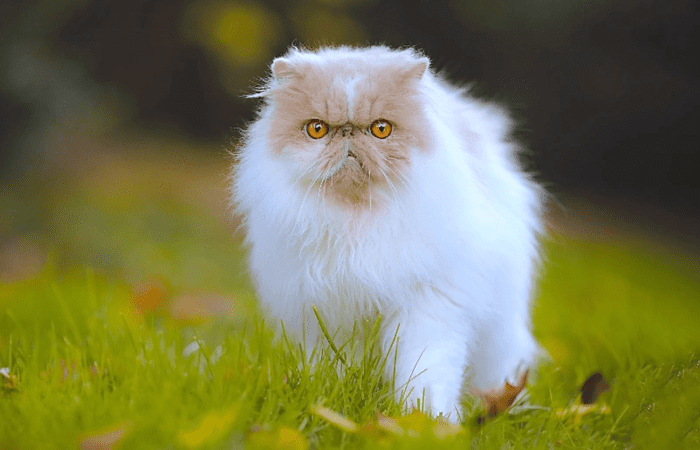
Gato Persa
El gato Persa es tranquilo, cariñoso y disfruta de ambientes calmados. Su pelaje largo y suave lo hace ver elegante y adorable. Es perfecto para quienes buscan un compañero relajado.
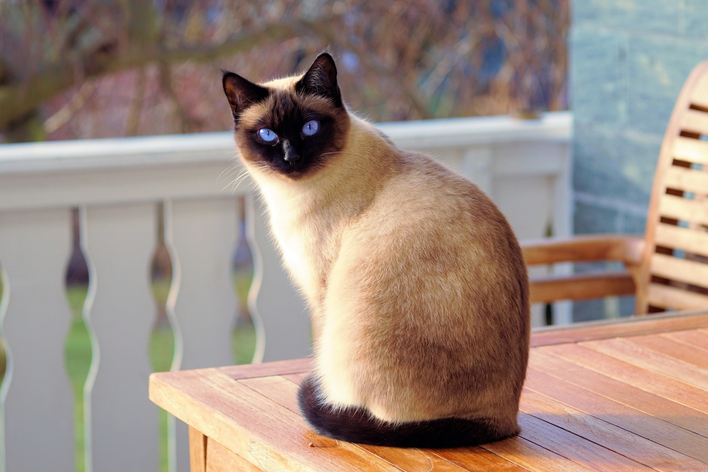
Gato Siamés
El Siamés es elegante, vocal y muy afectuoso. Le encanta comunicarse con su dueño y ser el centro de atención. Es una raza muy inteligente y expresiva.
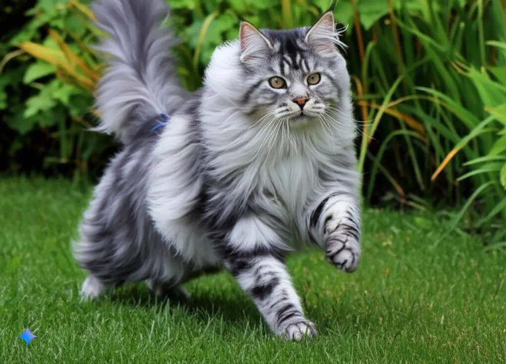
Maine Coon
Conocido como el “gigante gentil”, el Maine Coon es grande, sociable y muy dulce. Tiene un pelaje abundante y una personalidad amistosa que lo hace irresistible.
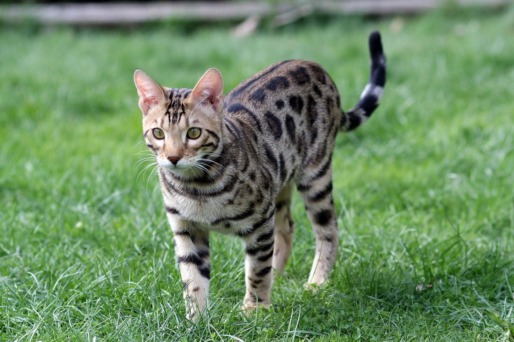
Gato Bengalí
El Bengalí tiene una apariencia salvaje similar a un mini-leopardo. Es activo, curioso y muy juguetón. Le encanta explorar y mantenerse en movimiento.
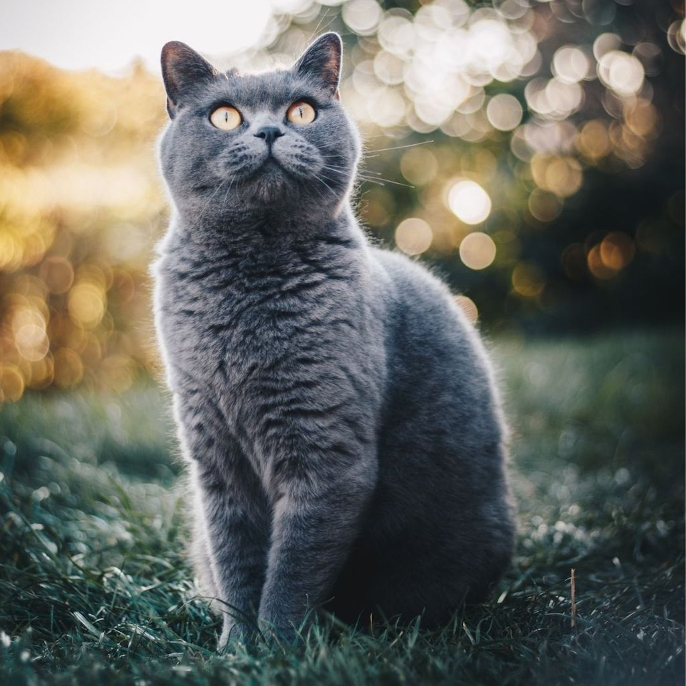
British Shorthair
Calmado, redondito y adorable. El British Shorthair es independiente pero cariñoso, ideal para personas que buscan un gato tranquilo y elegante.
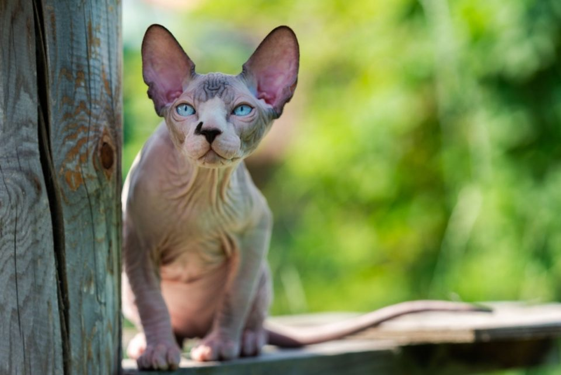
Sphynx
Aunque no tiene pelo, el Sphynx es cálido, cariñoso y extremadamente sociable. Le encanta estar cerca de su dueño y recibir atención constante.
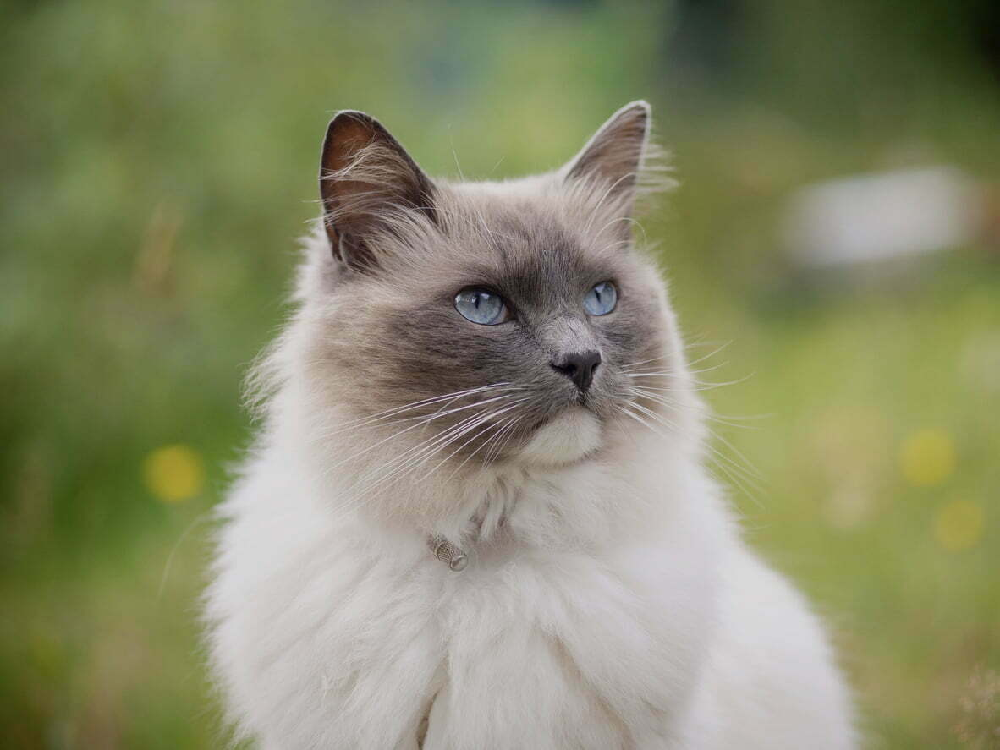
Ragdoll
El Ragdoll es conocido por relajarse completamente cuando lo cargan. Es dulce, tranquilo y muy afectuoso. Ideal para hogares donde buscan un gato calmado.
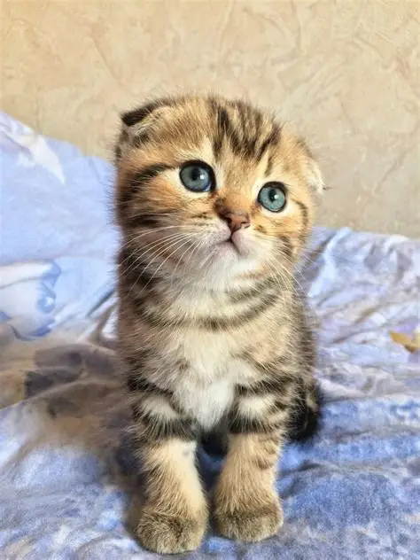
Scottish Fold
Con sus orejitas dobladas, el Scottish Fold es tierno y calmado. Tiene un carácter dulce y disfruta de ambientes tranquilos y acogedores.

Bosque Noruego
Fuerte, aventurero y con un pelaje grueso que lo protege del frío. Es un gato curioso y aliente, perfecto para quienes aman la naturaleza.
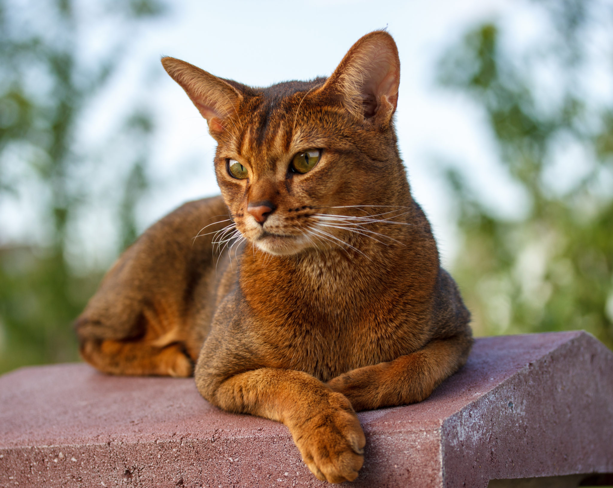
Abisinio
El Abisinio es activo, curioso y muy elegante. Le encanta explorar y mantenerse en movimiento. Es una raza inteligente y llena de energía.
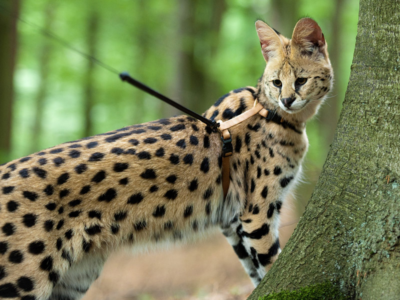
Savannah
Exótico y atlético, el Savannah tiene una energía salvaje y un aspecto impresionante. Es muy activo y necesita estimulación constante.
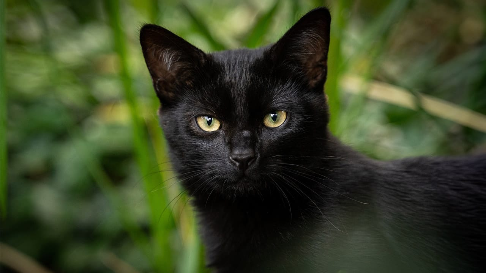
Bombay
Con su pelaje negro brillante y ojos dorados, el Bombay es elegante y afectuoso. Le encanta estar cerca de su dueño y recibir cariño.